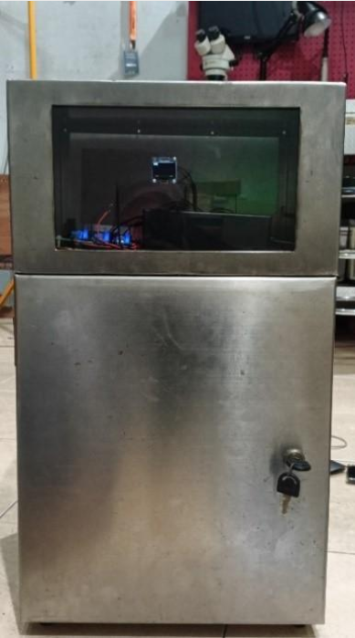

Smelling Durian with Machines
A Smarter Way to Detect Ripeness 🍃

Durian—often called the “king of fruits”—is famous for its strong aroma and divisive reputation. For some, it’s a delicacy; for others, it’s overwhelming. But one thing everyone can agree on: determining the perfect ripeness is tricky. Traditionally, this relies on experience—smelling, tapping, or even shaking the fruit.
What if we could make this process more consistent, automated, and reliable?
That’s exactly where this project comes in.
🌡️ Turning Aroma into Data
The idea behind this system is simple but powerful: use sensors to “smell” the durian and let an algorithm decide its ripeness.
As durian ripens, it releases different volatile compounds that change over time. Instead of relying on human judgment, this system uses a combination of gas sensors—MQ-3, MQ-4, and MQ-134—to detect those compounds. Each sensor is sensitive to different gases, creating a more complete “aroma profile” of the fruit.
These sensors continuously capture data, transforming what we normally perceive as smell into measurable electrical signals.
🧠 Why Fuzzy Logic?
Real-world data isn’t always clean or precise—especially when dealing with natural processes like fruit ripening. That’s why this system uses fuzzy logic instead of traditional threshold-based methods.
Instead of rigid rules like:
“If gas level > X, then ripe”
Fuzzy logic allows gradual interpretations such as:
- Somewhat ripe
- Almost ripe
By combining readings from multiple sensors, the system classifies durian into:
- Unripe
- Semi-ripe
- Ripe
The result is a more natural and reliable decision-making process—closer to human reasoning, but far more consistent.
🔧 My Role in the Project
1. PCB Design
I designed the full electronic schematic and PCB layout, integrating the microcontroller with MQ-series gas sensors to ensure stable and efficient signal acquisition.
2. Wiring & Hardware Integration
I handled sensor connections, signal conditioning circuits, and power distribution to maintain accurate and noise-free readings.
3. Fuzzy Logic Programming
I developed the fuzzy logic algorithm, including membership functions and rule sets, to translate sensor data into meaningful ripeness classifications.
🚀 Why This Matters
- ✅ Consistency improves – no more guesswork
- ✅ Automation becomes possible – ideal for scaling
- ✅ Data-driven decisions – better quality control
This approach can extend beyond durian to other fruits and agricultural products, making post-harvest processes smarter and more efficient.
🌱 Final Thoughts
This project combines electronics, embedded systems, and artificial intelligence into a practical real-world solution. It shows how engineering can enhance even traditional processes like selecting fruit ripeness.
And who knows? In the future, choosing a ripe durian might be as simple as reading a sensor—no nose required.